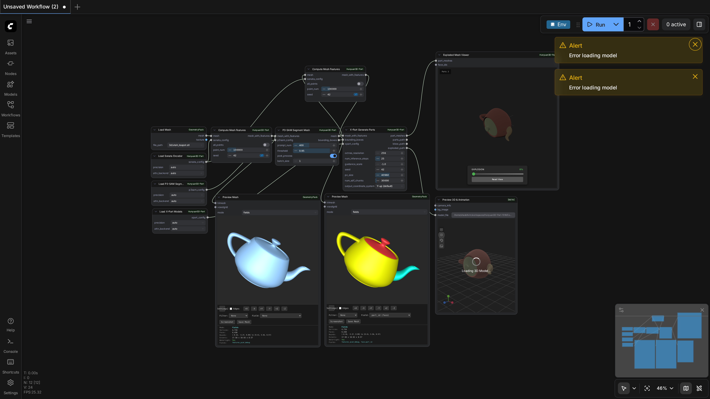
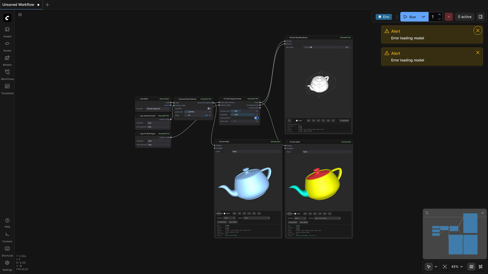

ComfyUI-Hunyuan3D-Part
Test Results
2026-02-24 15:25 UTC
Linux-6.8.0-90-generic-x86_64-with-glibc2.35
Intel(R) Xeon(R) Gold 6238R CPU @ 2.20GHz
NVIDIA RTX A6000
100.0%
2 passed
2/2 tests
Workflows
Grid
List

H3DPART-segment-partgen
pass
233.61s

H3DPART-segment
pass
103.12s
Downloaded Models
7 files · 9.2 GB
models/hunyuan3d-part/
8.8 GB
model.safetensors
6.2 GB
conditioner.safetensors
1.6 GB
shapevae.safetensors
625.2 MB
p3sam.safetensors
430.1 MB
models/sonata/
413.9 MB
sonata.pth
413.9 MB
.cache/huggingface/download/sonata.pth.metadata
124.0 B
.cache/huggingface/.gitignore
1.0 B
×
0.0s / 0.0s
Resource Usage
RAM (GB)
VRAM (GB)